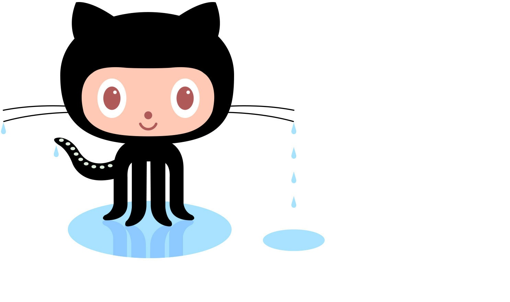

A system used to track and update changes to software
Q. What is a Git?
A Git is a version control system, ususally used for coordinating amongst software developers
Q. What is GitHub?
GitHub is a cloud-based Git repository
Q. What is the difference between a Git and GitHub
A Git is a tool used to manage multiple versions of a source code, and GitHub serves as a location to upload to a Git repository
Q. Who started GitHub and how was it started?
GitHub was started by Tom Preston-Warner, Scott Chacon, Chris Wanstrath, and P.J. Hyett, and was coded using Ruby On Rails
Q. What company owns GitHub now?
Microsoft
Q. How much does a GitHub account cost?
There is three types of user account; Free Accounts, which are free (obviously), Team Accounts, priced at $3.67 per user, and Enterprise Accounts, priced at $19.25 per user
Q. What is the Octocat?
Octocat is the mascot of GitHub, he is part Cat, part Octopus

Git/Github terms:
Repository: Contains all project files and revision history for said files
Commit: A saved, individual change, or revision, to a file
Fork: A new repository that shares code and visibility settings with the original repository.
Push: Used to upload a commit from a local repository to a remote repository
Pull Requests: Allows you to inform others about changes made to a repository
Workflows: A configurable, automated process that will run one or more jobs
Issues: Allows you to track progress, and shows where developments occur
Raw Button: Opens a file in raw form (removes HTML formatting)
Blame Button: Allows you to review a file, line by line, to see who made edits to the code and where